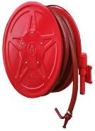
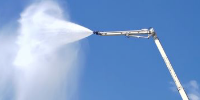

Enter restricted spaces
A tubular continuum body is intended to pass through openings and bend around obstacles that constrain bulkier rescue platforms.
Flexible access. Visual understanding. Closed-loop action.
Toward robot-assisted rescue in confined building spaces.
Fire rescue in dense buildings involves narrow passages, occluded regions, and restricted access. Inspired by flexible endoscopic exploration, this project investigates continuum robot agents that combine a steerable body with visual understanding and coordinated task execution.
The proposed system couples scene understanding and spatial reasoning with a vision-language-action layer for flexible navigation and manipulation. A multi-channel front end is designed to integrate illumination, visual imaging, fluid delivery, gas delivery, and material transport. The supplied demonstrations present miniature high-rise, residential, and factory scenarios involving target localization, directed water spraying, and mask delivery.
本專案探索面向建築火災救援的具身智能連續體機器人，結合視覺理解、柔性導航及多通道作業。現有材料展示高樓、住宅與工廠微縮場景；真實火場部署與完整定量驗證仍屬後續研究。
The presentation frames the challenge around dense, high-rise, and ageing buildings. Narrow corridors, cluttered rooms, and small openings can restrict access; smoke and occlusion make it difficult to inspect the scene from a safe position. The research asks whether a flexible robot can extend observation and local action into these blind zones.
A tubular continuum body is intended to pass through openings and bend around obstacles that constrain bulkier rescue platforms.
A camera at the front end supplies a close-range view, allowing the system to locate a target and observe the effect of an action.
Working channels bring water and deliverable materials through the same body, connecting scene inspection with an intervention.
The PPT describes an image-understanding brain and a continuum-action brain. The first interprets the robot view and the rescue instruction; the second connects the task to steering, advancement, and tool operation. Repeated visual observations provide the feedback needed to adjust the next action.
The proposed cognitive layer identifies task-relevant targets and obstacles, reasons about where the robot can move, and maintains scene context during exploration. The presentation discusses interactive reasoning, spatial localization, and memory of searched versus unexplored areas.
Research foundation: RoboBrain 2.0, cited on slides 6–7.
The proposed action layer uses a vision-language-action formulation to relate observations and instructions to robot movement. Its task sequence includes bending and advancement, aiming before spraying, and coordinating extension, delivery, and withdrawal.
Research foundation: EndoVLA, cited on slide 8.


The central hardware idea combines the reach of a hose with the directional control of a continuum tip. The presentation describes bending in any direction around the tip axis, allowing the end effector to orient toward a target while the flexible body carries multiple working pathways.




The PPT proposes two deployment settings: integration with building fire-hose infrastructure for indoor access, and a flexible front end on an external firefighting platform. The current videos demonstrate tasks in miniature building setups.
The team constructed residential, high-rise, and factory mock-ups with targets placed inside or outside the building. Each scenario highlights a different relationship between access, aiming, and delivery.

Track an exterior target from the robot view, orient the tip, and direct water toward the target.
Watch the exterior task ↗
Operate from inside the building: locate the indoor target, spray, then switch to mask delivery.
Watch the indoor task ↗
Combine exterior work with entry through an opening, then continue the interior task and delivery sequence.
Watch the combined task ↗The PPT presents each task from a robot camera and an external camera. Use the task sequence below to interpret the clips: the robot view shows aiming and local observation, while the external view shows the tip position and the surrounding miniature building.
These are miniature laboratory scenarios. The source materials do not provide controlled benchmarks, trial counts, success rates, or evidence of deployment in operational building fires.
| Component | Current evidence | Status |
|---|---|---|
| Robot & building tasks | Prototype photos and embedded miniature-scene clips. | Demonstrated |
| Dual-brain architecture | Image understanding and continuum action described in the PPT. | Concept |
| Real-fire robustness | Smoke, heat, and field reliability require further evaluation. | Future work |
| Code & quantitative evaluation | No implementation release or benchmark tables supplied. | Not released |
The project received Third Prize in Innovation, in the Mathematics and Physics / Mechanics and Control Systems category. CUHK's official award list names the project as Exploring Continuum Robot Agents for Firefighting in Buildings.
The CUHK research record lists the award in May 2026. The university's event report dates the award ceremony to 30 May 2026.
CUHK research award record ↗CUHK event report ↗Official award list (p. 2) ↗

RoboBrain 2.0 Technical Report — background for the scene-understanding and reasoning concept.
EndoVLA: Dual-Phase Vision-Language-Action Model for Autonomous Tracking in Endoscopy — background for the continuum action layer. These links identify related work; they are not a publication citation for this project.